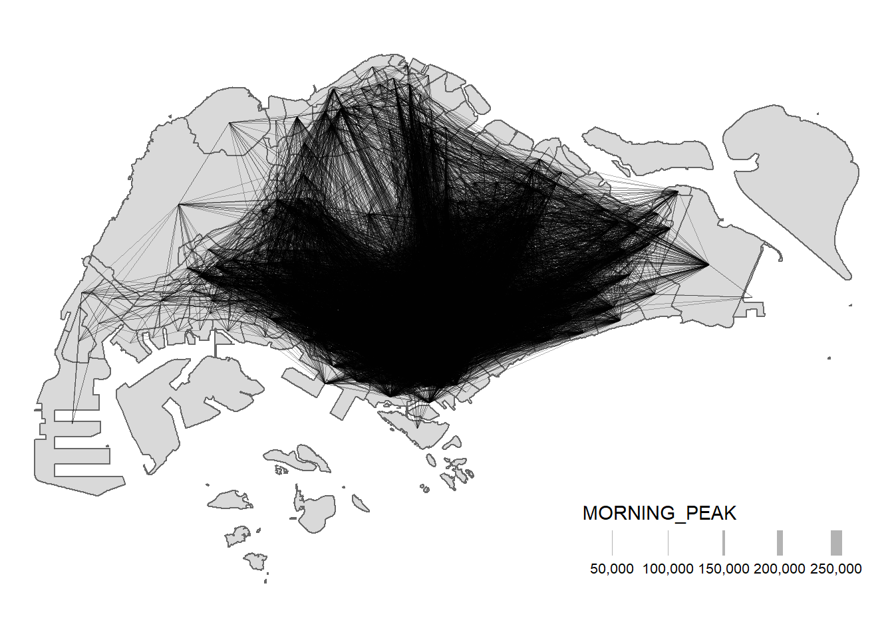
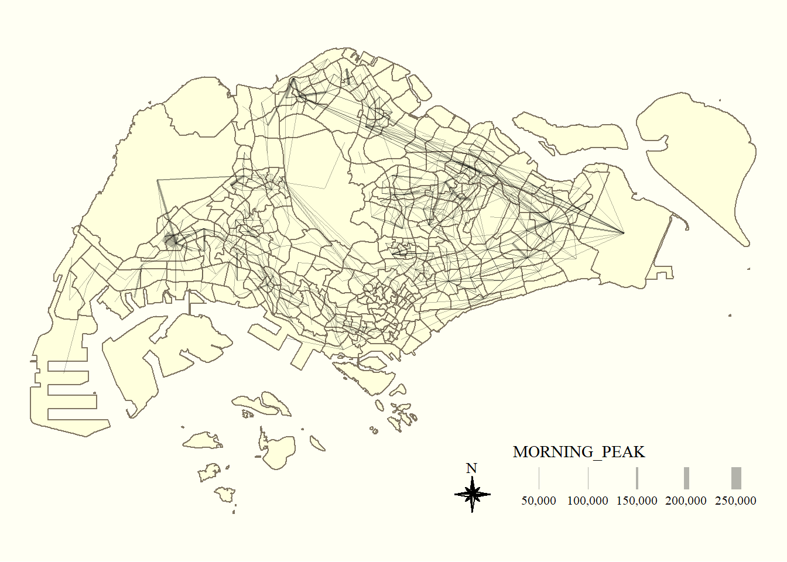

pacman::p_load(tmap, sf, DT, stplanr,
performance,
ggpubr, tidyverse)Hands-on Ex 3
Spatial Interaction: Processing and Visualising Flow Data
1 What is Spatial Interaction?
Spatial interaction represents the flow of people, materials, or information between locations in geographical space. Each spatial interaction is composed of a discrete origin->destination pair. Each pair can be represented as a cell in a matrix where rows are related to the locations (centroids) of origin, while columns are related to locations (centroids) of destination. Such a matrix is commonly known as an origin/destination matrix, or a spatial interaction matrix.
2 Loading the Packages
For the purpose of this exercise, four r packages will be used. They are:
- sf for importing, integrating, processing and transforming geospatial data
- tidyverse for importing, integrating, wrangling and visualising data
- tmap for creating thematic maps
- DT for interactive dataframe styling
3 Loading Aspatial Data
The dataset used is Passenger Volume by Origin Bus Stop from LTA Datamall. The data extracted is from September 2023.
odbus09 <- read_csv("data/aspatial/origin_destination_bus_202309.csv")
glimpse(odbus09)Rows: 5,714,196
Columns: 7
$ YEAR_MONTH <chr> "2023-09", "2023-09", "2023-09", "2023-09", "2023-…
$ DAY_TYPE <chr> "WEEKENDS/HOLIDAY", "WEEKENDS/HOLIDAY", "WEEKDAY",…
$ TIME_PER_HOUR <dbl> 17, 10, 10, 7, 7, 11, 16, 16, 16, 20, 7, 11, 11, 1…
$ PT_TYPE <chr> "BUS", "BUS", "BUS", "BUS", "BUS", "BUS", "BUS", "…
$ ORIGIN_PT_CODE <chr> "24499", "65239", "65239", "23519", "23519", "5250…
$ DESTINATION_PT_CODE <chr> "22221", "65159", "65159", "23311", "23311", "4204…
$ TOTAL_TRIPS <dbl> 1, 9, 2, 6, 1, 2, 18, 3, 2, 1, 2, 5, 3, 5, 5, 19, …glimpse() reveals that the values in ORIGIN_PT_CODE and DESTINATON_PT_CODE are character data types. As these represent unique bus stops, we treat them as categorical data and cast them as factor type:
odbus09 <- odbus09 %>%
mutate(ORIGIN_PT_CODE = as.factor(ORIGIN_PT_CODE),
DESTINATION_PT_CODE = as.factor( DESTINATION_PT_CODE))3.1 Extracting data for study
For the purpose of this exercise, we will extract commuting flows on weekday and between 6 and 9 o’clock.
odbus6_9 <- odbus09 %>%
filter(
DAY_TYPE == "WEEKDAY"
) %>%
filter(
TIME_PER_HOUR >= 6 &
TIME_PER_HOUR <= 9
) %>%
group_by(
ORIGIN_PT_CODE,
DESTINATION_PT_CODE
) %>%
summarise(
TRIPS = sum(TOTAL_TRIPS)
) %>%
ungroup()
DT::datatable(head(odbus6_9, 10))3.2 Saving the dataframe as RDS
We will save the output in rds format for future usage:
write_rds(odbus6_9, "data/rds/odbus6_9.rds")Then, import the rds file into the R environment
odbus6_9 <- read_rds("data/rds/odbus6_9.rds")4 Loading Geospatial Data
Two geospatial data will be used in this exercise, they are:
- busstop: This data provides the location of bus stops
- MPSZ-2019: This data provides the sub-zone boundary of URA Master Plan 2019
Both geospatial dataframes are transformed into the same EPSG code 3414 based on Co-ordinate Reference System (CRS)
busstop is a Simple Features Dataframe (point)
busstop <- st_read(dsn = "data/geospatial",
layer = "BusStop") %>%
st_transform(crs = 3414)Reading layer `BusStop' from data source
`C:\haileycsy\ISSS624-AGA\Hands-on_Ex\hoe3\data\geospatial'
using driver `ESRI Shapefile'
Simple feature collection with 5161 features and 3 fields
Geometry type: POINT
Dimension: XY
Bounding box: xmin: 3970.122 ymin: 26482.1 xmax: 48284.56 ymax: 52983.82
Projected CRS: SVY21MPSZ 2019 is a Simple Features Dataframe (Polygon)
mpsz <- st_read(dsn = "data/geospatial",
layer = "MPSZ-2019") %>%
st_transform(crs = 3414)Reading layer `MPSZ-2019' from data source
`C:\haileycsy\ISSS624-AGA\Hands-on_Ex\hoe3\data\geospatial'
using driver `ESRI Shapefile'
Simple feature collection with 332 features and 6 fields
Geometry type: MULTIPOLYGON
Dimension: XY
Bounding box: xmin: 103.6057 ymin: 1.158699 xmax: 104.0885 ymax: 1.470775
Geodetic CRS: WGS 84The code chunk below writes the mpsz sf tibble data frame into an rds file for future use:
mpsz <- write_rds(mpsz, "data/rds/mpsz.rds")5 Geospatial Data Wrangling
The following code chunk integrates the planning subzone codes (i.e. SUBZONE_C) of mpsz sf data frame into busstop sf data frame.
st_intersection()is used to perform point and polygon overly and the output will be in point sf object.select()of dplyr package is then use to retain only BUS_STOP_N and SUBZONE_C in the busstop_mpsz sf data frame.
Note:5 bus stops are excluded in the resultant data frame because they are outside of Singapore boundary.
busstop_mpsz <- st_intersection(busstop, mpsz) %>%
select(BUS_STOP_N, SUBZONE_C) %>%
st_drop_geometry()od_data <- left_join(
odbus6_9 , busstop_mpsz,
by = c("ORIGIN_PT_CODE" = "BUS_STOP_N")
) %>%
rename(
ORIGIN_BS = ORIGIN_PT_CODE,
ORIGIN_SZ = SUBZONE_C,
DESTIN_BS = DESTINATION_PT_CODE)duplicates <- od_data %>%
group_by_all() %>%
filter(n() > 1) %>%
ungroup()
duplicates# A tibble: 1,154 × 4
ORIGIN_BS DESTIN_BS TRIPS ORIGIN_SZ
<chr> <fct> <dbl> <chr>
1 11009 01411 9 QTSZ01
2 11009 01411 9 QTSZ01
3 11009 01421 19 QTSZ01
4 11009 01421 19 QTSZ01
5 11009 01511 10 QTSZ01
6 11009 01511 10 QTSZ01
7 11009 01521 5 QTSZ01
8 11009 01521 5 QTSZ01
9 11009 01611 3 QTSZ01
10 11009 01611 3 QTSZ01
# ℹ 1,144 more rowsThere are 1,154 duplicated rows. These are removed by retaining only unique values with the following code:
od_data <- unique(od_data)Check again to ensure that duplicates have been truly removed:
duplicates_2 <- od_data %>%
group_by_all() %>%
filter(n() > 1) %>%
ungroup()
duplicates_2# A tibble: 0 × 4
# ℹ 4 variables: ORIGIN_BS <chr>, DESTIN_BS <fct>, TRIPS <dbl>, ORIGIN_SZ <chr>od_data <- left_join(od_data , busstop_mpsz,
by = c("DESTIN_BS" = "BUS_STOP_N"))
od_data <- od_data %>%
rename(
DESTIN_SZ = SUBZONE_C
) %>%
drop_na() %>%
group_by(
ORIGIN_SZ, DESTIN_SZ
) %>%
summarise(
MORNING_PEAK = sum(TRIPS)
) %>%
ungroup()write_rds(od_data, "data/rds/od_data.rds")od_data <- read_rds("data/rds/od_data.rds")6 Visualising Spatial Interaction
6.1 Removing intra-zonal flows
As we are interested in the spatial flows between different subzones, we remove those orign/destination flows within the subzones:
od_data1 <- od_data[od_data$ORIGIN_SZ!=od_data$DESTIN_SZ,]6.2 Creating desire lines
Desire lines are straight lines that represent ‘origin-destination’ data that records how many people travel (or could travel) between places (points or zones)
In this code chunk, od2line() of stplanr package is used to create the desire lines:
flowline <- od2line(flow = od_data1,
zones = mpsz,
zone_code = "SUBZONE_C")6.3 Visualising desire lines
tmap_options(check.and.fix = TRUE)
tmap_mode("plot")
tm_shape(mpsz) +
tm_polygons() +
flowline %>%
tm_shape() +
tm_lines(lwd = "MORNING_PEAK",
style = "quantile",
scale = c(0.1, 1, 3, 5, 7, 10),
n = 6,
alpha = 0.3
) +
tm_layout(
frame = FALSE
)
When the flow data is visually messy and highly skewed like the one shown above, it is wiser to focus on selected flows.
Thus, we will focus on flows greater >= 5000:
tm_shape(mpsz) +
tm_polygons() +
flowline %>%
filter(MORNING_PEAK >= 5000) %>%
tm_shape() +
tm_lines(lwd = "MORNING_PEAK",
style = "quantile",
scale = c(0.1, 1, 3, 5, 7, 10),
n = 6,
alpha = 0.3
) +
tm_compass(
type="8star", size = 2
) +
tm_layout(
frame = FALSE
) +
tmap_style("classic")